1Введение
Используйте данное Руководство совместно с Руководством на жидкостный подогреватель BINAR, который используется с тепловым модулем. Внимательно прочитайте и соблюдайте указания по безопасности и монтажу жидкостного подогревателя, приведённые в Руководстве на подогреватель. Храните Руководство на жидкостный подогреватель BINAR совместно с данным Руководством в доступном месте.
Настоящее руководство по эксплуатации (далее — РЭ) предназначено для изучения устройства, работы, правил эксплуатации и содержит обязательные требования по монтажу тепловых модулей типа Мультихот.
Тепловой модуль Мультихот — многофункциональная система для отопления транспортного средства типа автодома, мобильного офиса, лодки, яхты, хаусбота, мобильного жилого помещения и др.
В качестве источника тепла используются жидкостный подогреватель, работающий на жидком топливе (дизель или бензин), и тепловой электронагреватель ТЭН (220 В). Оба источника тепла могут работать независимо друг от друга. В качестве теплоносителя используется антифриз или тосол.
Руководство по эксплуатации может не отражать незначительные изменения, внесённые предприятием-изготовителем после подписания к печати данного РЭ.
2Основные параметры и характеристики
Основные технические характеристики тепловых модулей приведены в таблице 1 с допуском 10 %, получены при номинальном напряжении питания и температуре 20 °C.
| Характеристики | Мультихот 1.0 24 В | Мультихот 1.0 12 В | Мультихот 2.0 24 В | Мультихот 2.0 12 В |
|---|---|---|---|---|
| Мощность ТЭНа, Вт | 1500 / 3000 | 1500 / 3000 | 1500 | 1500 |
| Теплоноситель | Тосол или антифриз | |||
| Применяемое топливо | дизельное топливо (ГОСТ 305), бензин (ГОСТ Р 51105) | |||
| Объём бака, л | 5,5 | 5,5 | 9 | 9 |
| Напряжение питания, В | 24 | 12 | 24 | 12 |
| Количество зон подключения | 5 | |||
3Техника безопасности и предупреждения
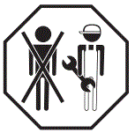
Монтаж теплового модуля и его компонентов должен производиться специализированными организациями и специалистами в соответствии с данным Руководством и руководством по монтажу на подогреватель.
Запрещается прокладывать топливопровод внутри используемого жилого помещения; если это невозможно, рекомендуется убирать топливопровод в защитную гофротрубу во избежание его повреждения. Запрещается прокладывать топливопровод вблизи нагревательных элементов и острых кромок. Запрещается прокладывать электропроводку (жгуты) подогревателя вблизи топливопровода. Объект, оборудованный подогревателем, должен иметь огнетушитель.
- 3.1. Монтаж теплового модуля системы Мультихот производится в изолированном коробе, отделяющем тепловой модуль от жилого помещения. Монтаж жидкостного подогревателя рекомендуется осуществлять за пределами жилого помещения. Эти рекомендации исключают проникновение шума, запаха топлива и выхлопных газов в жилое помещение. Остальное оборудование (зависимый отопитель/радиаторы, пульт управления, модуль управления МВС, пластинчатый теплообменник, терморегулирующий клапан, датчики) размещается непосредственно внутри жилой зоны транспортного средства.
- 3.2. При монтаже и демонтаже теплового модуля и его компонентов должны соблюдаться меры безопасности, предусмотренные правилами проведения работ с электрической сетью и топливной системой транспортного средства.
- 3.3. Запрещается эксплуатация теплового модуля и жидкостного подогревателя при негерметичной топливной системе.
- 3.4. Запрещается эксплуатация теплового модуля и жидкостного подогревателя при негерметичной жидкостной системе.
- 3.5. Транспортное средство, оборудованное тепловым модулем и жидкостным подогревателем, должно иметь огнетушитель.
- 3.6. Запрещается пользоваться жидкостным подогревателем в замкнутых пространствах и плохо вентилируемых помещениях (гараже, мастерских и т.п.).
- 3.7. Перед заправкой транспортного средства топливом необходимо убедиться в том, что жидкостный подогреватель выключен и не работает (полный цикл выключения завершён). Для этого жидкостный подогреватель нужно заранее выключить.
- 3.8. Питание жидкостного подогревателя электроэнергией должно осуществляться напрямую от аккумуляторной батареи независимо от выключателя массы транспортного средства.
- 3.9. При длительной стоянке или хранении транспортного средства рекомендуется отключать жидкостный подогреватель и тепловой модуль от источника питания (аккумулятора) во избежание разрядки аккумулятора.
- 3.10. При проведении электросварочных работ на транспортном средстве жидкостный подогреватель необходимо отключить от аккумуляторной батареи.
- 3.11. Запрещается подключение подогревателя к электрической цепи транспортного средства при работающем двигателе и отсутствии аккумуляторной батареи.
- 3.12. Категорически запрещается отключение электропитания жидкостного подогревателя во время его работы до полной его остановки (горение прекращено, цикл продувки окончен), так как это может привести к неблагоприятным последствиям.
- 3.13. Запрещается подсоединять и отсоединять разъёмы жидкостного подогревателя при включённом электропитании жидкостного подогревателя.
- 3.14. После выключения подогревателя повторное включение должно быть не ранее чем через 5–10 секунд.
- 3.15. При появлении неисправностей в работе подогревателя необходимо обращаться в специализированные ремонтные организации и сервисы, уполномоченные заводом-изготовителем.
- 3.16. Не рекомендуется располагать модуль ближе 1 метра к инверторам 12→220 В (во избежание наводок).
4Описание устройства и работы
Комплексная система отопления Мультихот (основные узлы системы показаны на рис. 4.1 и 4.2) является автономным нагревательным устройством, которое содержит:
- бак-теплообменник с тепловым электронагревателем ТЭН (220 В);
- жидкостный подогреватель;
- зависимый отопитель или радиатор;
- электродвигатель с насосом (помпу) для принудительной прокачки рабочей жидкости (антифриз или тосол) через теплообменную систему;
- модуль управления МВС, осуществляющий управление вышеперечисленными устройствами;
- пульт управления.
В системе отопления используется жидкий теплоноситель (антифриз или тосол). Система может состоять из нескольких независимых контуров отопления и оснащена пультом управления. Система автоматически поддерживает заданную температуру одновременно в нескольких контурах отопления.
Тепловой модуль системы Мультихот 1.0
Конструкция представляет собой накопительный бак для жидкого теплоносителя (антифриз или тосол). Теплоноситель циркулирует через водяной пластинчатый теплообменник, который обеспечивает подачу горячей воды для душа и кухни.
Тепловой модуль поддерживает до пяти независимых контуров отопления. Помимо обогрева помещений, отдельный контур можно использовать для нагрева (подготовки) горячей воды (мойка кухни, душ), а также для подогрева тёплого пола и предпускового подогрева двигателя транспортного средства. Каждый контур оборудован собственным датчиком температуры, что обеспечивает точное управление и гибкость в настройке системы отопления.
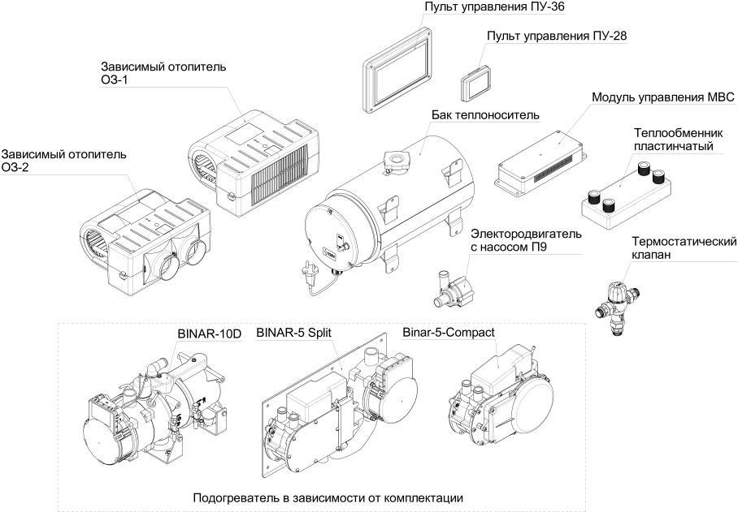
Тепловой модуль системы Мультихот 2.0
Конструкция представляет собой накопительный бак-теплообменник для жидкого теплоносителя (антифриз или тосол). Внутри бака проложен змеевик, через который проходит нагреваемая вода. Благодаря высокой теплоотдаче бойлер функционирует в режиме проточного нагревателя, обеспечивая подачу горячей воды для душа и кухни.
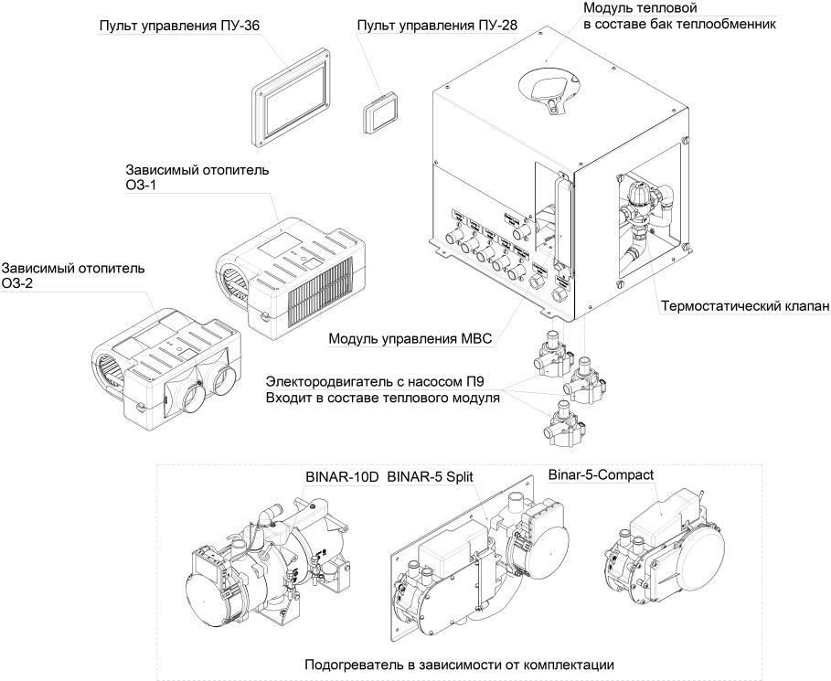
Нагрев теплоносителя в системе Мультихот осуществляется жидкостным подогревателем «Бинар» мощностью 5, 10 или 13 кВт (работающим либо на бензине, либо на дизеле в зависимости от модификации жидкостного подогревателя). Для работы в кемпинге предусмотрен встроенный тепловой электронагреватель ТЭН (220 В) мощностью 1,5 кВт, который обеспечивает отопление от сети (220 В).
Обогрев жилого помещения может осуществляться через пассивные радиаторы-теплообменники, зависимые отопители (ОЗ-1 или ОЗ-2) и контур тёплого пола, подключённые к тепловому модулю.
В зависимом отопителе (ОЗ-1 или ОЗ-2) горячий теплоноситель поступает в радиаторы, нагревая их, а вентилятор распределяет тепло по салону за счёт циркуляции воздуха. В зависимом отопителе используется бесколлекторный двигатель с крыльчаткой типа «беличье колесо», не подверженной загрязнению пылью и создающей достаточный воздушный поток для распределения нагретых воздушных масс по воздуховодам. Зависимый отопитель функционирует в автоматическом режиме, плавно регулируя обороты вентилятора и полностью отключая его при достижении заданной температуры в помещении.
Система «Мультихот» поддерживает до пяти независимых контуров отопления, каждый из которых оснащается индивидуальным циркуляционным насосом. Помимо обогрева помещений, отдельные контуры можно использовать для подогрева пола и предпускового подогрева двигателя транспортного средства. Каждый контур оборудован собственным датчиком температуры.
5Органы управления
Управление системой «Мультихот» осуществляется через большой 7-дюймовый сенсорный дисплей, устанавливаемый на видное место в транспортном средстве. Для удобства в каждом помещении можно дополнительно установить мини-дисплеи, которые полностью дублируют функции основного устройства.
Управление компонентами системы осуществляется через пульт. Пульт позволяет:
- включать и выключать отопление помещения в 5 зонах с заданием уставки температуры в каждой зоне; уставки для дневного и ночного режима задаются отдельно;
- задавать таймеры автоматического включения по времени и дням недели;
- просматривать состояние датчиков температур, помп, вентиляторов и нагревателя в окне диагностики.
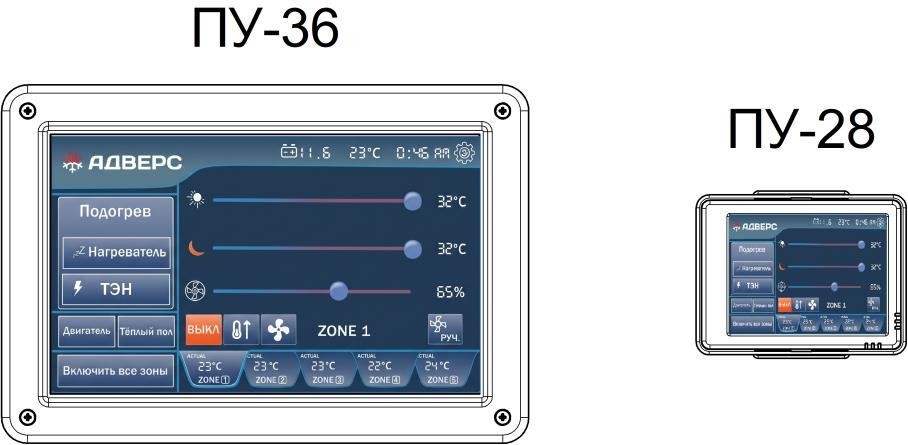
Пульт управления ПУ-28 является вспомогательным и устанавливается в отдельных зонах (комнатах) для удобства управления системой. Подробное описание его экранов — в руководстве на пульт ПУ-28.
На рисунке 5.1 изображён главный экран пульта управления системой в состоянии, когда отображены все иконки и кнопки. В левой части экрана расположены кнопки включения жидкостного подогревателя — Нагреватель, теплового электронагревателя ТЭН (220 В) — ТЭН, предпускового подогрева двигателя — Двигатель, включения тёплого пола — Тёплый пол, включения всех зон — Включить все зоны.
В правом верхнем углу расположена кнопка перехода в экран настроек . В случае неисправности в работе системы в верхней строке экрана появляется знак .
В верхней части экрана отображается температура датчика наружного воздуха. В случае неисправности или отсутствия датчика температуры рядом с показаниями появляется знак неисправности. Также в верхней части показаны текущее время блока управления и напряжение.
В нижней строке экрана располагаются кнопки выбора зон отопления. Для каждой зоны задаются индивидуально уставки температур дня и ночи и режим работы вентилятора воздушного отопителя. На каждой кнопке выбора зоны отображается текущее значение температуры в зоне нагрева. В случае повреждения датчика рядом со значением температуры появляется знак неисправности. Если зона отопления включена (поддерживается заданная температура), она отображается оранжевым цветом, если отключена — синим. Зона отключается, если ползунки дневной и ночной уставки температур находятся в крайнем левом положении.
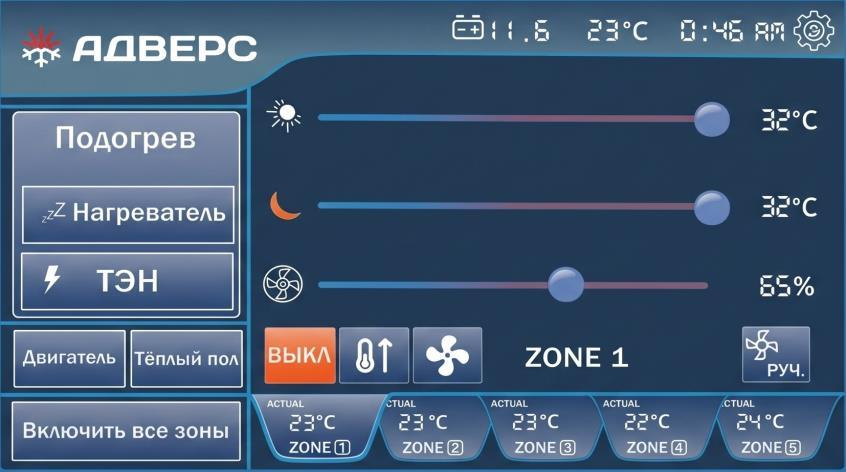
5.1Настройка системы
При нажатии кнопки «Настройки» появится окно настроек, в нижней части которого изображены вкладки.
Вкладка с изображением часов — настройка времени Установка времени (рис. 5.2). В этом окне выбирается формат времени 24 ч или 12 ч и устанавливается время: часы, минуты. Также устанавливается дата: год, месяц, день. Чтобы новые значения времени и даты установились, необходимо нажать кнопку уст.
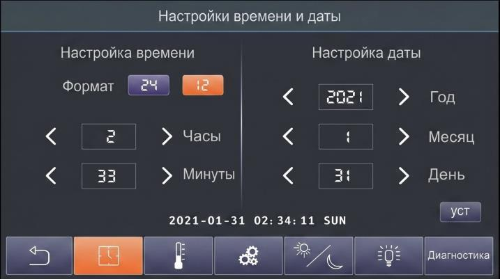
На следующей вкладке осуществляется выбор единицы измерения температур — Фаренгейт (°F) или Цельсий (°C) (рис. 5.3). Также устанавливается температура пола (отображается, если настроена зона тёплого пола) и температура подогрева двигателя (отображается, если настроена зона подогрева двигателя).
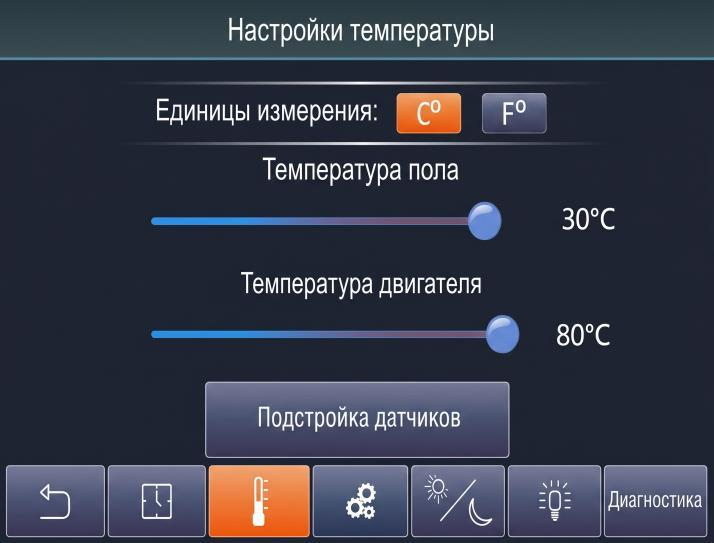
При нажатии кнопки Подстройка датчиков открывается меню, где можно отрегулировать значения установленной температуры относительно фактической (рис. 5.4).
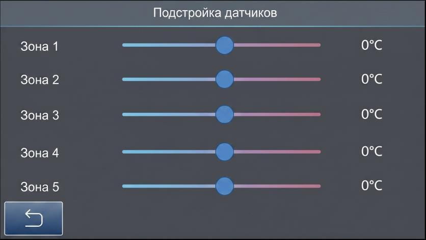
В окне настроек Настройки системы (рис. 5.5) ползунком задаётся ограничение максимального времени работы нагревателя — Ограничение времени работы. Ограничение времени работы помпы — принудительный запуск помпы на определённое время от 1 до 60 минут. Принудительный запуск помпы может понадобиться при заливке антифриза в систему отопления, для удаления воздуха из системы. Кнопками Помпа бинара, Помпа 1, Помпа 2 можно выбрать помпу, которая будет работать по времени.
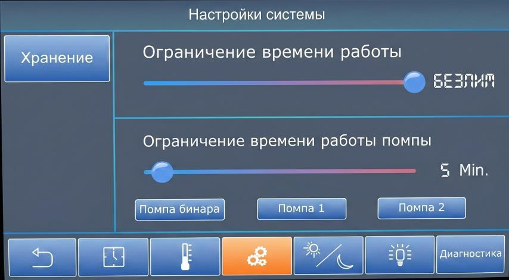
Следующая вкладка в настройках — установка времени перехода на дневной/ночной режимы работы Настройка дня/ночи (рис. 5.6). С помощью ползунка От задаётся время начала дневного режима с шагом 10 минут. Ползунком До задаётся время окончания дневного режима и переход на ночной режим, в котором действует ночная уставка температур.
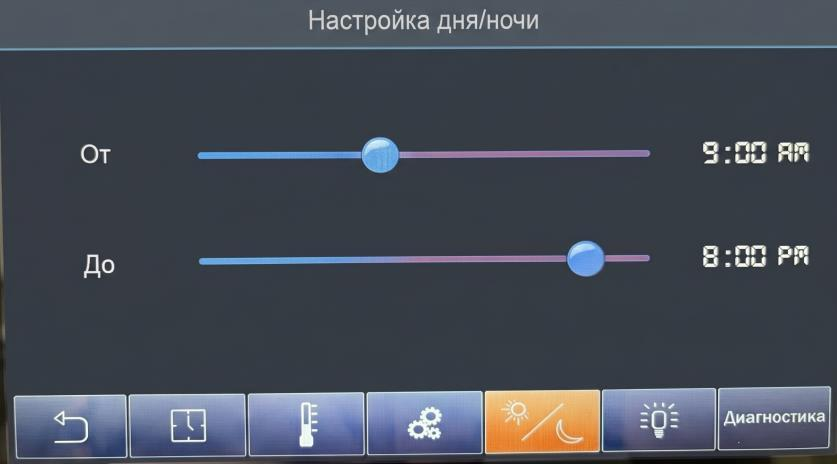
В окне Подсветка (рис. 5.7) ползунками задаётся яркость экрана для дневного времени (День) и ночного времени (Ночь) в процентах от максимальной величины. Как только текущее время станет равным времени От, заданному в окне «Настройка дня/ночи», яркость экрана станет в соответствии с настройкой День. Когда текущее время станет равным времени До, яркость дисплея будет на уровне Ночь. Ползунком Время задаётся время, в течение которого экран не гаснет (для экономии электропотребления).
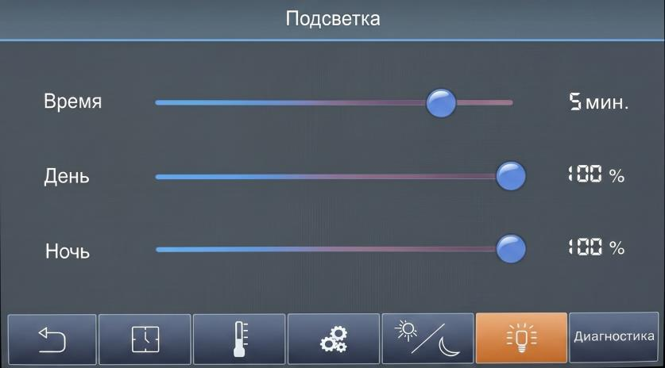
В окне Диагностика (рис. 5.8) отслеживаются текущие значения датчиков температуры и состояние управляющих элементов.
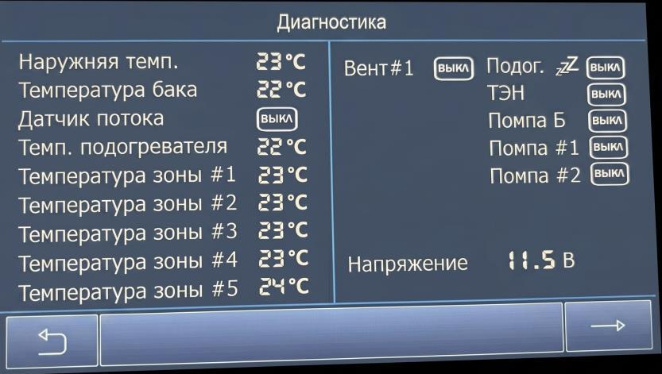
В дополнительном окне Диагностика находится информация о серийных номерах нагревателя (ПО Бинара), модуля управления (ПО Модуля) и пульта управления (ПО Пульта), а также общее время работы системы (Наработка системы), нагревателя (Наработка бинара) и нагревательного элемента ТЭНа (Наработка ТЭНа) (рис. 5.9).
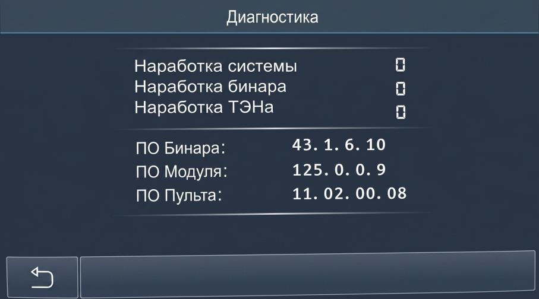
5.2Запуск системы
Для включения системы необходимо включить источник нагрева: жидкостный подогреватель (Нагреватель) или тепловой электронагреватель ТЭН (220 В) (ТЭН). Возможна совместная работа источников нагрева. Нагреватели после включения будут поднимать температуру в системе и удерживать её на уровне 80 ± 10 °C.
Если необходимо отопление салона, выберите зону отопления (Зона 1, Зона 2, …) и установите желаемую температуру для дневного и для ночного времени суток.
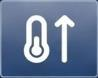
При нажатии кнопки она должна загореться оранжевым — это значит, что нагрев зоны включился.
Отключение отопления зоны происходит при нажатии этой кнопки или установке обоих ползунков температуры в крайнее левое положение. Режим отопления отключается, если все зоны отключены.
Скорость обдува зависимых отопителей (ОЗ-1 или ОЗ-2) регулируется автоматически, если включена эта кнопка. По мере приближения температуры в зоне нагрева к заданной величине скорость обдува будет уменьшаться.
Чтобы самостоятельно регулировать скорость обдува зависимых отопителей (ОЗ-1 или ОЗ-2), нажмите эту кнопку и регулируйте скорость ползунком.
Если планируется длительное использование горячей воды (например, принять душ), необходимо убедиться, что включён жидкостный подогреватель (Нагреватель), так как мощности теплового электронагревателя ТЭНа недостаточно для нагрева больших объёмов проточной воды. Рекомендуется совместная работа жидкостного подогревателя и теплового электронагревателя ТЭНа (220 В).
6Основные требования к монтажу системы и его узлов
6.1Общие указания
Соблюдайте меры безопасности во время монтажа.
Тепловой модуль системы Мультихот должен являться высшей точкой жидкостной системы. Если это невозможно, в системе должен быть предусмотрен внешний расширительный бак (см. рис. 6.1а и 6.1б). Размер расширительного бака зависит от заправочного объёма системы — 1 литр на каждые 10 л теплоносителя (антифриз/тосол) в системе. В случае использования расширительного бака он должен быть соединён с самой высокой точкой гидросистемы и ещё одной точкой с заправочным штуцером бака. Дренажное отверстие теплового модуля в этом случае должно быть заглушено.
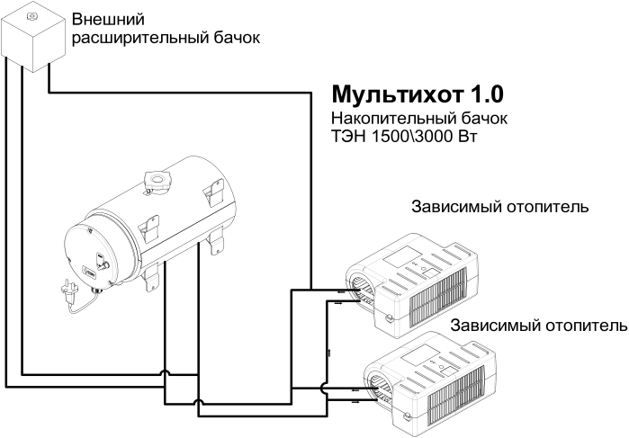
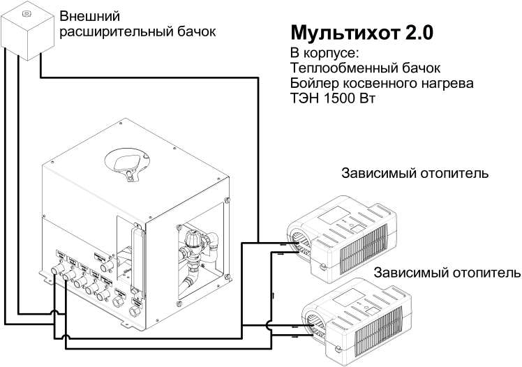
Габаритные размеры и пространство, необходимое для доступа при техобслуживании, представлены на рис. 6.2а и 6.2б.
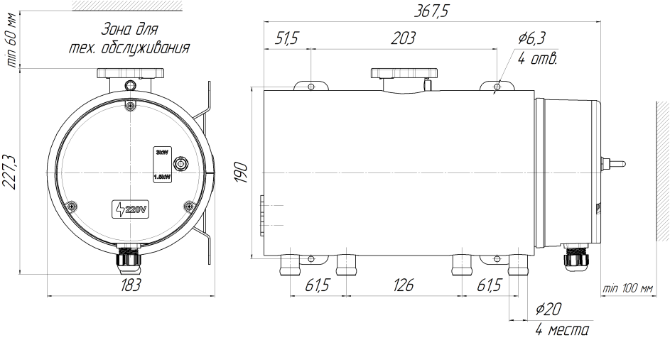
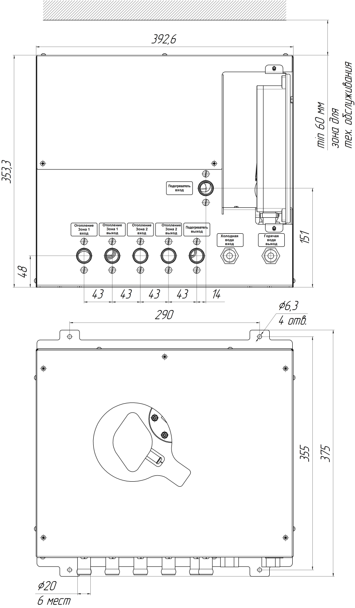
6.2Гидросистема
Центром системы является бак-теплообменник. Система Мультихот 1.0 имеет 4 соединительных патрубка для подключения шлангов теплоносителя и 2 резьбовых фитинга для подключения тёплого пола. Система Мультихот 2.0 имеет 6 соединительных патрубков для подключения шлангов теплоносителя и 2 резьбовых фитинга для подключения к системе водоснабжения. В горловине бака-теплообменника имеется штуцер для подключения дренажно-предохранительной трубки. Максимальное давление в системе ограничивается клапаном выбранной пробки, обычно 0,7–1,1 атм. В случае превышения давления излишки будут стравлены через дренажную трубку. В случае перелива теплоносителя в системе при его расширении излишки также будут удалены из системы через дренажный шланг.
6.2.1Дренажный шланг
Дренажный шланг подключается к штуцеру, расположенному в заливной горловине (штуцер имеет форму «ёлочки» и диаметр Ø12). Обычно это силиконовый шланг, соединяющий выход клапана с забортным пространством. Расположение шланга рекомендуется планировать так, чтобы он был максимально коротким и в случае выхода через него нагретых паров теплоносителя не мог причинить вред здоровью окружающих. Рекомендуется выводить его в днище транспортного средства, не слишком близко к борту. Для дренажа следует выбирать исключительно высокотемпературный шланг, не допускающий перегибания (рекомендуется толстостенный силикон).
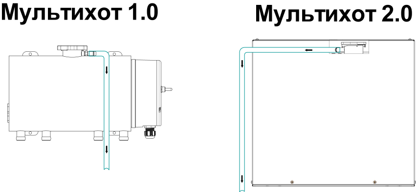
6.3Подключение контуров
Система «Мультихот» поддерживает до пяти независимых контуров отопления, каждый из которых оснащён индивидуальным циркуляционным насосом. Помимо обогрева помещений, отдельные контуры можно использовать для подогрева пола и двигателя. Пример подключения всех зон представлен на рис. 6.4а и 6.4б.
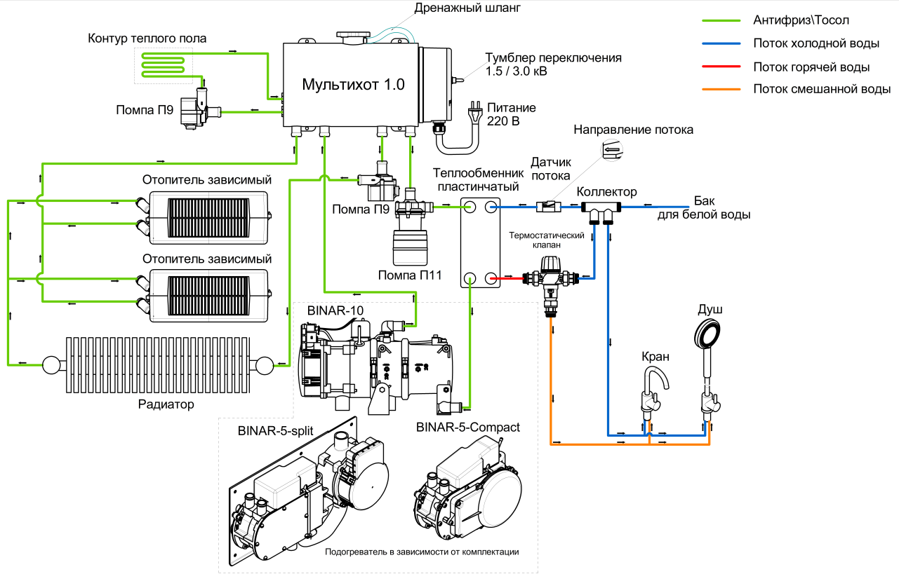
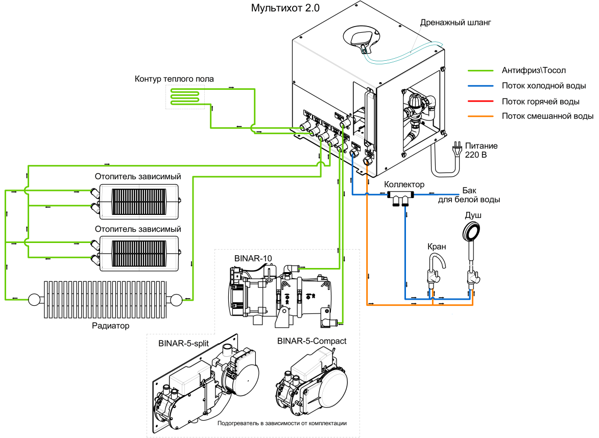
6.3.1Подключение жидкостного контура подогревателя к жидкостному контуру теплового модуля
Жидкостный контур предназначен для соединения жидкостного подогревателя с баком-теплообменником теплового модуля. В комплекте теплового модуля Мультихот 1.0 имеется помпа типа «П9» для обеспечения циркуляции в контуре. Такая же помпа находится внутри теплового модуля Мультихот 2.0.
При монтаже важно соблюдать «Вход» и «Выход» данного контура, так как от этого зависит эффективность работы бака в качестве теплообменника. Подогреватель BINAR-5-Compact не имеет определённого направления движения жидкости и может быть подключен в любом направлении (основные требования и рекомендации к установке подогревателя — в Руководстве по эксплуатации на подогреватель). Подогреватель BINAR-10 подключается определённым образом: нижний штуцер — вход теплоносителя (антифриз), верхний — выход.
6.3.2Подключение зависимых отопителей
В контур допускается подключение зависимых отопителей (не менее двух, подключённых параллельно), так как при выключенном вентиляторе обдува они практически не снимают тепло с теплоносителя.
Первый и второй контуры отопления полностью эквивалентны между собой. Каждый из них имеет собственную помпу типа «П9» внутри корпуса теплового модуля (Мультихот 2.0). Контуры предназначены для подключения различных устройств обогрева помещения (зависимый отопитель, радиатор). Направление движения жидкости следует учитывать при проектировании магистрали отопления, а именно при развоздушивании системы: поток жидкости должен помогать пузырям воздуха добраться до расширительного бака, а не забивать их в угол радиатора/зависимого отопителя. В местах скопления воздуха необходимо разместить клапаны для стравливания воздуха.
При подключении к одному из контуров нескольких зависимых отопителей типа «ОЗ-1/2» они должны быть подключены только параллельно (см. рис. 6.5), так как диаметр их сечения меньше используемых в системе шлангов (сечение шлангов в системе Ø20) и при последовательном соединении они создадут сильное сопротивление потоку жидкости.
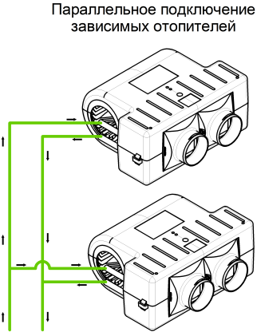
Допускается подключение воздуховодов (гофрированные трубы) для распределения нагретого отопителем воздуха в разные части салона транспортного средства (см. рис. 6.6).
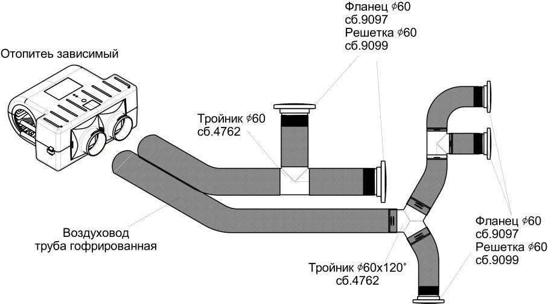
6.3.3Подключение радиаторов
При подключении к одному из контуров нескольких радиаторов они должны быть подключены только параллельно. Направление движения жидкости следует учитывать при проектировании магистрали отопления: поток жидкости должен помогать пузырям воздуха добраться до расширительного бака, а не забивать их в угол радиатора. В местах скопления воздуха необходимо разместить клапаны для стравливания воздуха (кран Маевского).
В качестве патрубков допускается использование резиновых и силиконовых патрубков, рассчитанных на температуру не ниже 100 °C. К одному контуру отопления можно подключить несколько зон с конвекционным обогревом, если перед каждой зоной с конвекторами установлен соленоидный клапан, электрически подключённый к выходу управления зоной на модуле управления МВС; это позволит управлять климатом в зонах независимо.
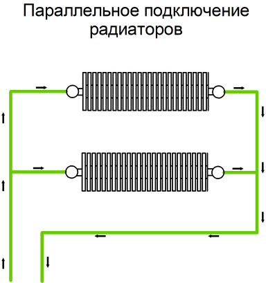
6.3.4Подключение тёплого пола
Для организации тёплого пола рекомендуется использовать силиконовую трубку с внутренним диаметром не менее 10 мм. Если длина магистрали тёплого пола превышает 15 метров, контур необходимо разделить на несколько, соединённых тройниками/коллекторами. Также возможно подключение двух и более контуров тёплого пола. При подключении нескольких контуров тёплого пола они должны быть подключены только параллельно.
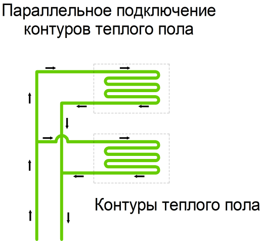
В утеплителе пола (пеноплекс) для трубки делаются пазы глубиной 85 % внешнего диаметра трубки, чтобы при настиле следующего слоя трубка слегка расплющилась и увеличилась площадь соприкосновения с верхним слоем. Поверх утеплителя необходимо настелить алюминиевый лист толщиной 0,7–1 мм для равномерного распределения тепла по поверхности пола: если на трубку постелить сразу фанеру, ДСП или другой материал с малой теплопроводностью, распределение тепла будет крайне неравномерным.
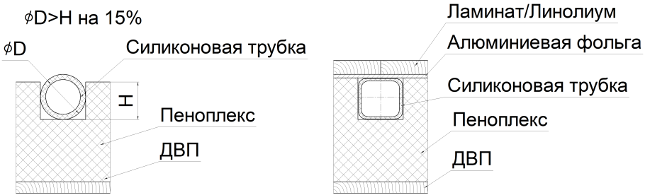
6.3.5Подключение подогрева воды
Для обеспечения подогрева воды в системе Мультихот 1.0 необходимо установить проточный пластинчатый теплообменник и термостатический клапан. Вращая головку клапана, можно настраивать выходную температуру воды в пределах 30–55 °C.
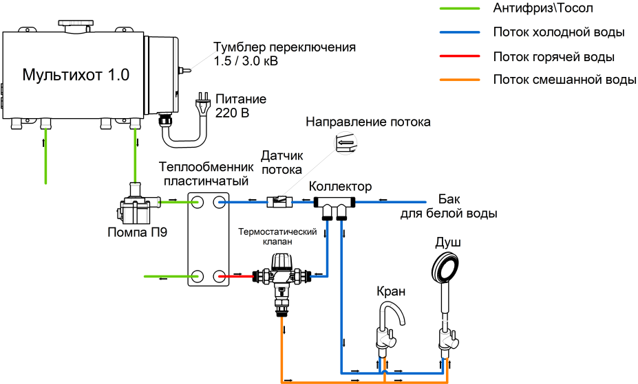
Система Мультихот 2.0 обеспечивает подогрев воды проточным способом. Внутри бака находится теплообменник, через который пропускается вода, отбирая тепло у горячего антифриза в баке. Для подключения воды предусмотрены 2 резьбовых фитинга на передней панели, резьба G1/2 внутренняя. Рекомендуется организовывать гидросистему при помощи гибкой подводки. Внутри теплового модуля есть термостатический клапан, ограничивающий температуру воды на выходе. Вращая головку клапана, можно настраивать выходную температуру воды в пределах 30–55 °C.
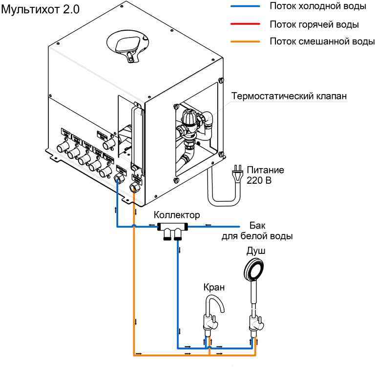
7Электрическое подключение системы
7.1Подключение питания подогревателя и системы
Питание подогревателя и питание системы Мультихот подключаются раздельно. Подогреватель имеет свой жгут питания (два кольцевых контакта: «плюс» и «минус»).
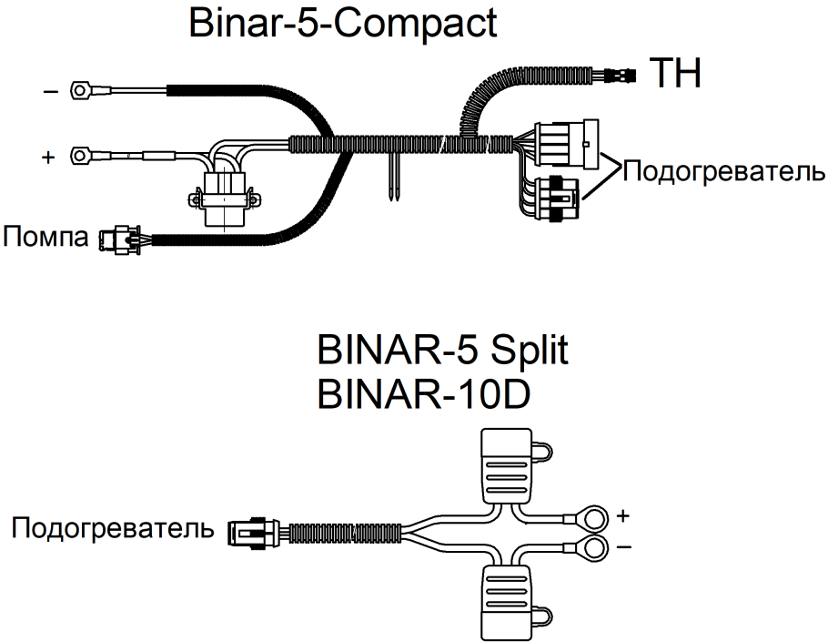
Тепловой модуль имеет свой жгут питания (два кольцевых контакта: «плюс» и «минус»).
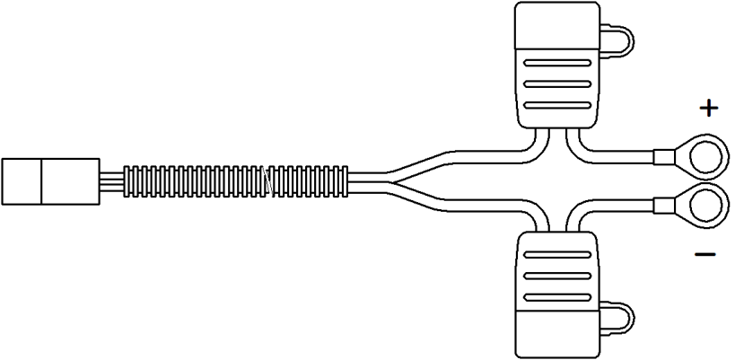
Рекомендуется массовые кольца этих жгутов подключать на минусовую клемму сервисной батареи обогреваемого объекта, а положительные клеммы через мощный выключатель (разрыватель массы) подключать к плюсовой клемме батареи.
7.2Подключение зависимого отопителя
Для подключения зависимых отопителей рекомендуется изготовить удлинители необходимой длины с использованием разъёмов (колодка штыревая 20581 и колодка гнездовая 20580). При изготовлении удлинителя красный/коричневый провод необходимо использовать сечением не менее 1,5 мм², синий — сечением не менее 0,5 мм²; зелёный провод в зависимом отопителе системой Мультихот не используется и удлинять его не нужно (допускается удлинение проводов пайкой или обжимом). С зависимым отопителем в комплекте поставки входят адаптеры.
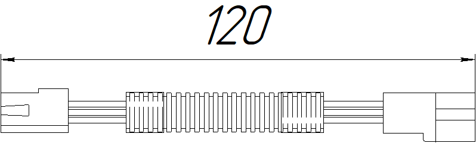
Адаптер подключается между зависимым отопителем и модулем управления МВС. Адаптер необходим для подключения отопителей с бесколлекторными двигателями (типа ОЗ-1, ОЗ-2). Одной из функций адаптера является блокировка ошибки обрыва цепи вентилятора. Рекомендуется устанавливать адаптер ближе к зависимому отопителю.
В случае использования зависимых отопителей с коллекторными двигателями (типа Xeros 4000) использование адаптера не требуется. В этом случае из зависимого отопителя должны выходить 2 провода («плюс» и «минус» питания). Их необходимо подключить к красному и синему проводу колодки, выходящей из теплового модуля. Иногда в таких зависимых отопителях в колодке есть третий провод — как правило, он подключён через резистор к двигателю и служит для снижения интенсивности работы; в данной системе этот провод не используется.
7.3Подключение теплового электронагревателя ТЭН (220 В)
В баке теплового модуля устанавливается тепловой электронагреватель ТЭН (220 В) с резьбой 1 дюйм, который запитывается от бортовой сети обогреваемого объекта.
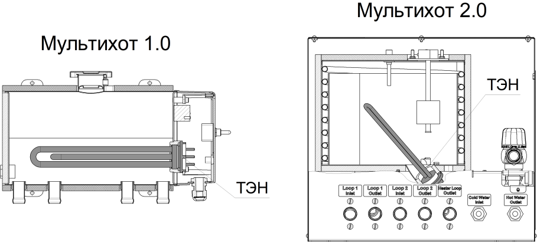
Управление тепловым электронагревателем ТЭН (220 В) осуществляется модулем управления МВС посредством реле. Допускается использование как электромагнитных, так и твердотельных реле. С твердотельными реле необходимо обратить внимание на полярность подключения (розовый провод — «плюс», чёрный — «минус»). Твердотельное реле обязательно устанавливается на радиатор. Управляемые контакты реле ставятся в разрыв линии, идущей к распределительному щитку. Линия, питающая тепловой электронагреватель ТЭН (220 В), обязательно должна быть оборудована УЗО либо дифференциальным автоматическим выключателем.
Корпус теплового модуля обязательно должен быть заземлён при помощи провода, один конец которого заканчивается кольцевым контактом, притянутым к неокрашенной части корпуса, а второй конец соединяется с массовой шиной. Место присоединения заземляющего провода к корпусу рекомендуется побрызгать смазкой для контактов.
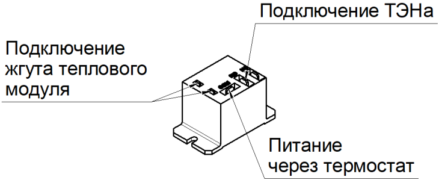
7.4Подключение термостата
В тепловой системе Мультихот присутствует механический термостат в качестве второй ступени защиты от перегрева жидкости тепловым электронагревателем ТЭНом (220 В). Термостат устанавливается в разрыв высоковольтного провода и крепится ко дну бака. В случае срабатывания термостата он разрывает цепь теплового электронагревателя ТЭНа (220 В); после устранения причины перегрева (заклинивание/пробой реле, неисправность датчика температуры бака) термостат сбрасывается нажатием на кнопку на его корпусе.
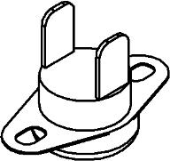
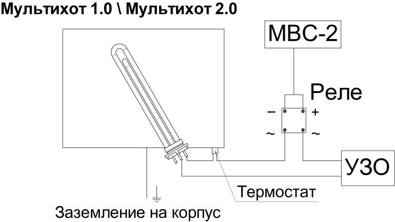
7.5Подключение к CAN-шине
Все элементы системы совершают информационный обмен по CAN-шине. CAN-шину теплового модуля нельзя объединять с CAN-шиной транспортного средства (в ней используется другой протокол обмена, и возможны непредсказуемые последствия).
Общие рекомендации по прокладке CAN-шины:
- двойной витой провод сечением не менее 0,35 мм²;
- в обоих концах шины должны быть терминаторы (резисторы номиналом 120 Ом);
- отводы от CAN-шины к абонентам не должны превышать 50 см;
- общее число абонентов — не более 32.
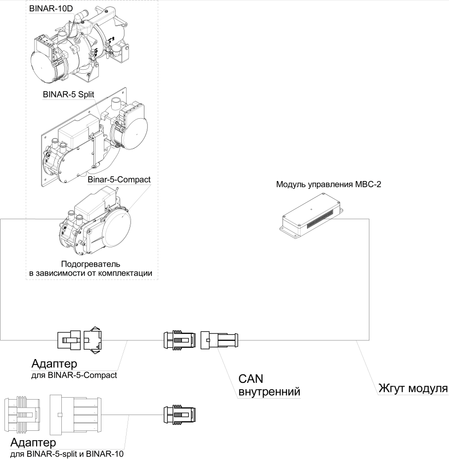
В комплекте с тепловым модулем идёт адаптер для подключения подогревателя к CAN-разъёму теплового модуля. Адаптер содержит два защитных резистора для защиты от отказа оборудования.
В тепловом модуле есть три разъёма CAN: два разъёма «CAN Внутренний» и один разъём «CAN Внешний». Разъёмы «CAN Внутренний» равнозначны и служат для подключения подогревателя, плат расширения функционала и диагностического оборудования. Разъём «CAN Внешний» служит для интеграции тепловой системы Мультихот в общую шину транспортного средства, оборудованного шиной RV-C. Эта шина служит для управления всеми системами транспортного средства с единого пульта.
CAN-жгут жидкостного подогревателя BINAR-5-Compact оканчивается чёрным пятиконтактным разъёмом. Если монтаж предполагает его размещение не внутри помещения, рекомендуется заменить разъём на герметичный либо исключить разъём (спаять провода CAN-переходника и жгута подогревателя и изолировать термоусадочной трубкой).
В модуле управления МВС есть специальный джампер для включения в цепь терминирующего резистора (у подогревателя такой опции нет). Если на шине будут установлены другие устройства (плата расширения, плата управления нагрузками, плата считывания показаний датчиков баков, дополнительные пульты управления и пр.), нужно включать терминирующие резисторы в крайних устройствах на шине, и не более двух, так как каждый резистор создаёт дополнительную нагрузку на CAN-передатчики.
7.6Подключение электродвигателя с насосом к подогревателю
Система Мультихот 1.0
Комплект системы Мультихот 1.0 включает в себя два электродвигателя с насосом (помпы) для циркуляции теплоносителя (тосол/антифриз) в контурах. Помпа, обеспечивающая циркуляцию контура с подогревателем, подключается к блоку управления подогревателя. Помпы, обеспечивающие циркуляцию теплоносителя в отапливаемых контурах, подключаются к модулю управления тепловой системой МВС-2.
Система Мультихот 2.0
Система Мультихот 2.0 включает в себя три помпы. Две помпы питают контуры отопления и подключаются к модулю управления тепловой системой МВС-2. Помпа, обеспечивающая циркуляцию контура с подогревателем, подключается к блоку управления подогревателя.
7.7Подключение датчика температуры
Рекомендации по монтажу датчика температуры воздуха
- датчик должен располагаться на высоте 1,5 метра от пола;
- датчик не должен подвергаться прямому воздействию климатических приборов (исключить нахождение непосредственно над радиаторами, в потоке воздуха из зависимого отопителя или кондиционера);
- исключить попадание прямых солнечных лучей (датчик не должен нагреваться от солнечного света);
- исключить расположение вблизи прочих источников тепла (варочная поверхность, радиатор холодильника, нагревающиеся электроприборы и пр.).
Рекомендации по монтажу датчика тёплого пола
- обеспечить полное прилегание датчика к полу на всё время эксплуатации;
- обеспечить безопасное место, где на него не смогут наступить или повредить при эксплуатации;
- датчик должен располагаться посередине между трубопроводами тёплого пола.
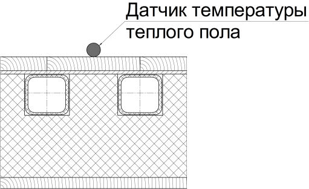
Рекомендации по монтажу датчика двигателя
Датчик используется при необходимости подогрева двигателя транспортного средства.
- рекомендуется расположить датчик температуры двигателя на трубопроводе, идущем от двигателя, в непосредственной близости от теплообменника;
- рекомендуется защитить датчик теплоизоляцией.
8Проверка подогревателя после монтажа
- 8.1. Убедиться, что при монтаже обеспечены: герметичность жидкостной системы; герметичность топливной системы; надёжность крепления соединений электрических разъёмов.
- 8.2. Полностью открыть кран отопителя салона. Удалить воздух из жидкостного контура системы и транспортного средства, руководствуясь предписаниями завода-изготовителя ТС. Установить переключатель скорости вентилятора печки в положение минимального вращения.
- 8.3. Установить предохранители.
- 8.4. При работе подогревателя необходимо проверить включение вентилятора отопителя кабины. Вентилятор должен включиться при достижении охлаждающей жидкостью температуры 40 °C.
- 8.5. Перед запуском системы рекомендуется прокачать и заполнить топливную трассу топливом.
- 8.6. Если в процессе запуска или работы подогревателя по какой-либо причине произошёл сбой, работа подогревателя прекратится, код ошибки будет высвечен на пульте управления.
9Рекомендации
- 9.1. Если подогреватель после включения не запускается, необходимо убедиться в наличии топлива в баке, в заряженности аккумуляторной батареи, в надёжности соединения разъёмов подогревателя и в исправности предохранителя 25 А.
- 9.2. Если не работает пульт управления (после нажатия кнопки не светится индикатор), необходимо проверить предохранитель 5 А.
- 9.3. Если вентилятор отопителя салона (печки) не включается автоматически при температуре охлаждающей жидкости свыше 40 °C, необходимо проверить предохранитель 15 А.
- 9.4. Если подогреватель не будет включаться или выключаться или после продувки камеры сгорания электродвигатель вентилятора будет вращаться беспрерывно — это признак системного сбоя. Для его устранения необходимо на 10 секунд снять предохранители 5 А и 25 А и снова установить их в последовательности: вначале 25 А, затем 5 А.
- 9.5. Все другие возможные неисправности подогревателя определяются автоматически и высвечиваются в виде кода на индикаторе пульта.
- 9.6. Описание неисправностей подогревателя и методику их устранения смотрите в руководстве на пульт.
- 9.7. При всех неисправностях, возникших во время эксплуатации, кроме оговорённых в п. 10.1–10.3, необходимо обращаться в ремонтную мастерскую.
- 9.8. Для обеспечения надёжной работы подогревателя необходимо включать его один раз в месяц на 5–10 минут, в том числе и в тёплый период года, если подогреватель не эксплуатируется. Эта операция необходима для удаления образующихся вязких плёночных отложений на подвижных частях топливного насоса. Невыполнение этой операции может привести к отказу работы подогревателя.
- 9.9. Надёжная работа подогревателя зависит от качества и вида топлива, которое должно применяться в зависимости от температуры окружающей среды.
- 9.10. При несвоевременном переходе на зимнее топливо может произойти запарафинивание фильтра топливозаборника в топливном баке (если он имеется) и фильтра в топливном насосе, что приводит к незапуску подогревателя или к отключению его во время работы. Для устранения возникшей неисправности необходимо:
- заменить топливо в топливном баке на топливо, соответствующее температуре окружающей среды;
- если работоспособность подогревателя не восстановилась после замены топлива, проверить фильтр топливного насоса следующим образом: демонтировать топливный насос с ТС; промыть фильтр в бензине и продуть сжатым воздухом; установить фильтр в топливный насос; установить топливный насос и провести проверку работоспособности подогревателя.
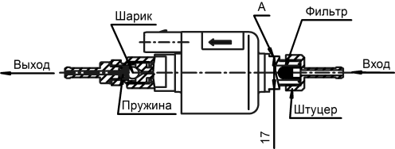
- 9.11. Применять топливо и охлаждающую жидкость марок, соответствующих сезону.
- 9.12. Регулярно контролировать степень зарядки аккумуляторной батареи.
- 9.13. Регулярно (1 раз в месяц) контролировать топливную и жидкостную системы на предмет утечек.
- 9.14. Рекомендуется при длительной стоянке или хранении ТС отключать систему от источника питания (аккумулятора) во избежание его разрядки (ток потребления подогревателя в нерабочем состоянии — 30–40 мА).
10Транспортировка и хранение
- 10.1. Система Мультихот безопасна при транспортировке и может транспортироваться любыми транспортными средствами, в том числе воздушным и железнодорожным транспортом, обеспечивающим защиту упакованных изделий от атмосферных осадков и климатических факторов согласно условиям 5 ГОСТ 15150-69, а от механических воздействий — по категории С ГОСТ 23216-78.
- 10.2. Условия хранения в упаковке предприятия-изготовителя должны соответствовать условиям хранения 2 ГОСТ 15150-69.
- 10.3. Срок хранения отопительной системы в упаковке предприятия-изготовителя — 24 месяца.
АПриложение А. Схемы

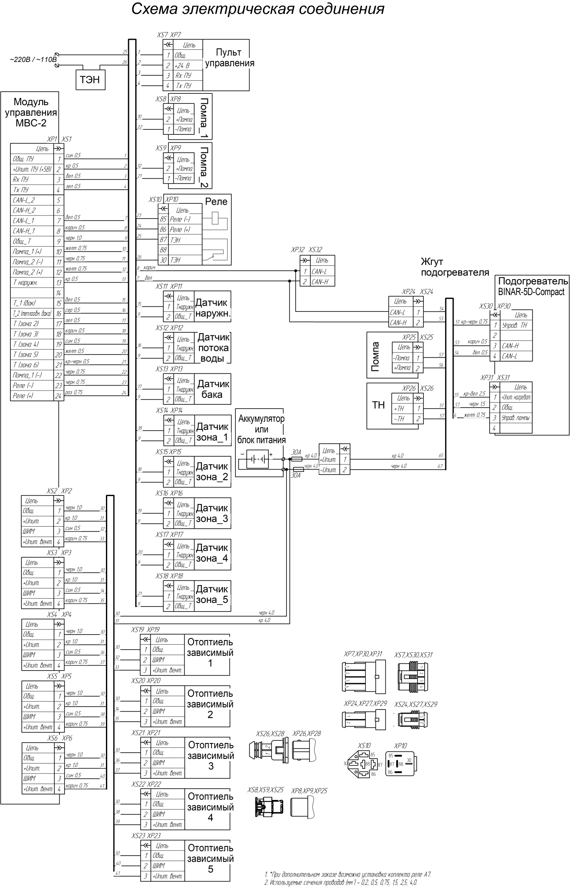

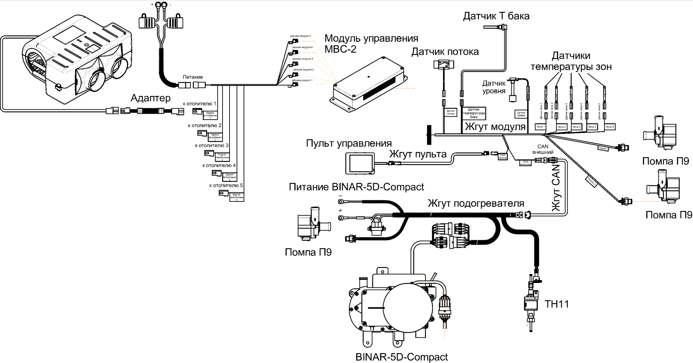
Контакты
ООО «АДВЕРС»
Россия, 443068, г. Самара, ул. Ново-Садовая, 106
Отдел продаж: +7 (846) 270-68-64, 270-65-09 · sales@advers.ru
Производство: +7 (846) 263-07-97
Сервисное обслуживание: +7 (846) 266-25-39, 266-25-41, 266-25-42, 266-25-43 · service@advers.ru, support@advers.ru
www.advers.ru